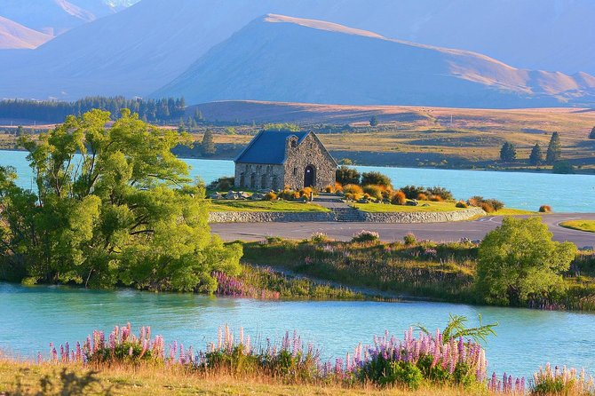

A Nova Zelândia é um país de beleza natural incomparável, conhecido por suas paisagens dramáticas e diversificadas. De fiordes majestosos a vulcões ativos, o país oferece experiências únicas para os amantes da natureza e aventura. Clique aqui para saber mais.
Principais pontos turísticos:
Lago Tekapo e Monte Cook
Wellington

Queenstown